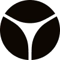
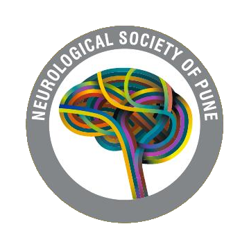
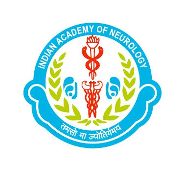
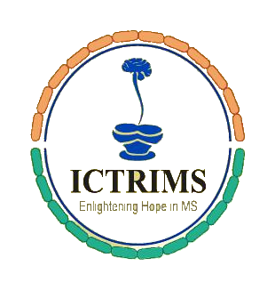
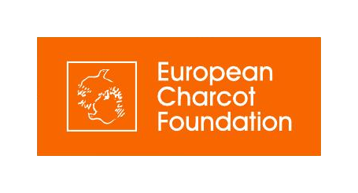

Joint Meeting of IAN Sub-Section on CNS Auto-Immune Disorders & ICTRIMS
A three-day overview of parallel sessions across Hall A and Hall B.
| Time | Hall A | Hall B |
|---|---|---|
| Friday, June 12, 2026 | ||
| 10.30 – 13.00 | Basic Science | — |
| 13.45 – 15.45 | Neuro-Ophthalmology | Systemic Disorders |
| 16.00 – 18.20 | NMOSD and MOGAD | — |
| Saturday, June 13, 2026 | ||
| 08.00 – 08.50 | Platform Presentations | Platform Presentations |
| 09.00 – 10.20 | Auto-Immune Encephalitis (AIE) I | Auto-Immune Encephalitis (AIE) II |
| 10.45 – 13.45 | European Charcot Foundation Symposium | — |
| 14.45 – 16.05 | Multiple Sclerosis Therapy - I | Multiple Sclerosis Therapy - II |
| 16.25 – 18.15 | Imaging in CNS Inflammatory Disorders | Miscellaneous - I |
| Sunday, June 14, 2026 | ||
| 08.00 – 08.50 | Platform Presentations | Platform Presentations |
| 09.00 – 10.40 | Miscellaneous - II | Miscellaneous - III |
| 11.00 – 12.40 | Multiple Sclerosis Therapy - III | Multiple Sclerosis Therapy - IV |
| 12.40 – 13.15 | CPC Analysis | — |
Select a day, then switch between Hall A and Hall B to browse every session.
Get the complete Hall A & Hall B schedule, faculty and session details in a single PDF.
Download Brochure (PDF)